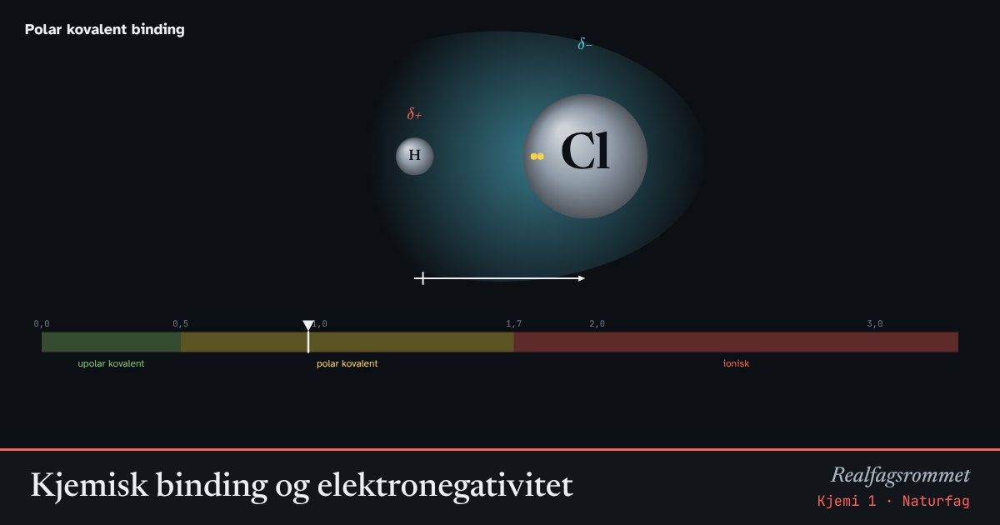

Kjemisk binding og elektronegativitet
Elektronegativitet er hvor hardt et atom trekker på elektronene i en binding. Forskjellen bestemmer om bindingen blir upolar, polar eller ionisk.
Start animasjonen
Formler
Om animasjonen
Den blå skyen viser hvor elektronene i bindingen befinner seg. Er atomene like elektronegative, deles elektronene likt: bindingen er upolar.
Er forskjellen større, trekkes elektronskyen mot det mest elektronegative atomet. Det får en delvis negativ ladning (δ−), og det andre en delvis positiv (δ+). Bindingen er polar.
Ved svært stor forskjell går elektronet helt over. Da dannes ioner, og de holdes sammen av elektrostatisk tiltrekning: en ionebinding.
Grensene 0,5 og 1,7 er tommelfingerregler. Overgangen fra polar til ionisk er glidende. Mellom to metaller blir det metallbinding.
Prøv dette
- Sorter bindingene C–H, O–H, N–H og H–F etter polaritet.
- Hvorfor løser salt seg godt i vann, mens olje ikke gjør det? Bruk ordet polaritet.
- Hvilke to grunnstoffer i lista gir størst forskjell i elektronegativitet?
- Er en molekyl med polare bindinger alltid polart? Tenk på CO₂.
Kompetansemål
- Naturfag: Kjemiske bindinger og stoffenes egenskaper
- Kjemi 1: Kjemisk binding og polaritet
- Kjemi 1: Løselighet og polaritet
Mer om atomer, periodesystemet og binding
- Atomets oppbygning og elektronkonfigurasjon
- Periodesystemet og periodiske egenskaper
- Bohrs atommodell og linjespektre
- Molekylformer: elektronpar frastøter hverandre
- Kjemiske bindinger og stoffenes egenskaper